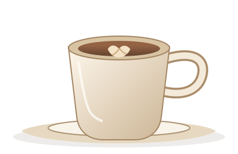
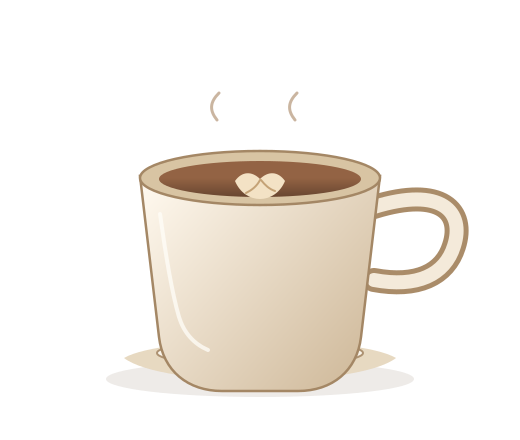

01 / КОФЕ↗

Флэт уайт
Двойной эспрессо, шёлковое молоко.
180 ₴КОФЕЙНЯ · ПЕКАРНЯ · ПОДОЛ
Пауза между делами, тёплая булочка и чашка, сваренная именно так, как вам нравится.

GROUND WITH CARE — SERVED WITH TIMEА с запаха свежемолотого кофе.
TERRA — место, где можно ненадолго замедлиться. Мы выбираем зерно у небольших хозяйств, печём на месте и готовим каждую чашку с вниманием к деталям.
Заглянуть в менюМАЛЕНЬКОЕ НАПОМИНАНИЕ
Иногда достаточно успеть на кофе.
ЖДЁМ ВАС В TERRA